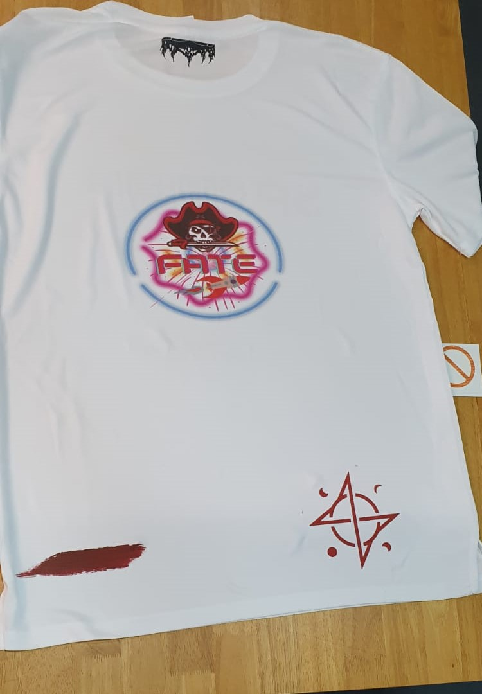
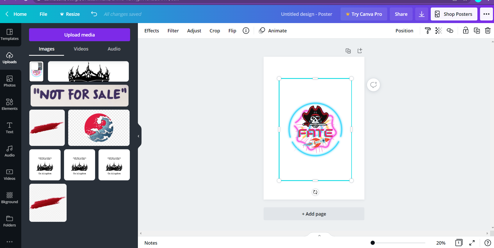
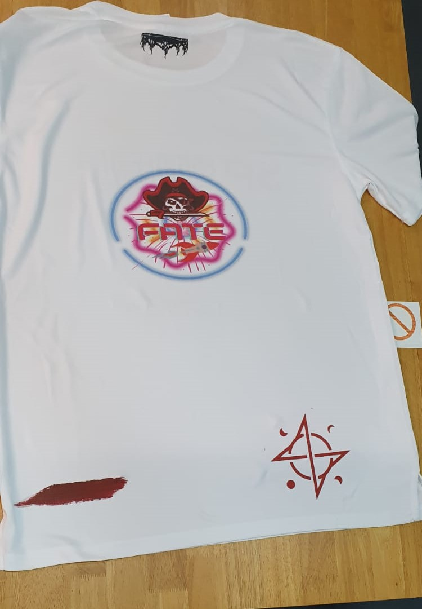
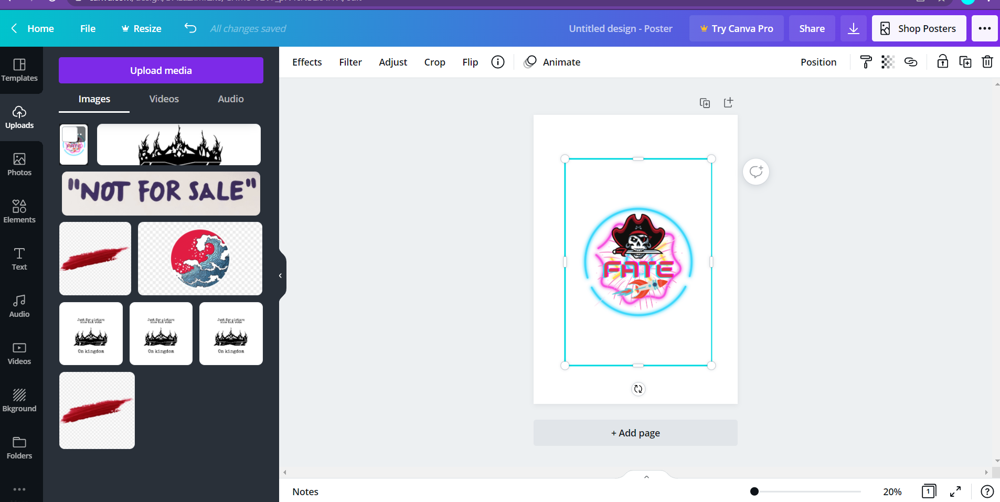

"The Engineering Academy is a premier programme to develop Engineering Innovators."
- SP Website
Engineering Academy gives me many opportunities to widen my skillset and explore limitless
boundries in expressing my creativity with well equipped FabLab facilities.
FabLab facilities gave me the opportunity to learn different crucial Engineering skills.
Example: 3D Printing Machines are readily available for me to 3D print designs I have made in
Fusion 360 using Ultimaker Cura.
~WARNING: *SCROLL DOWN* *PROJECT PAGE* *SCROLL DOWN* *PROJECT PAGE*~
 


